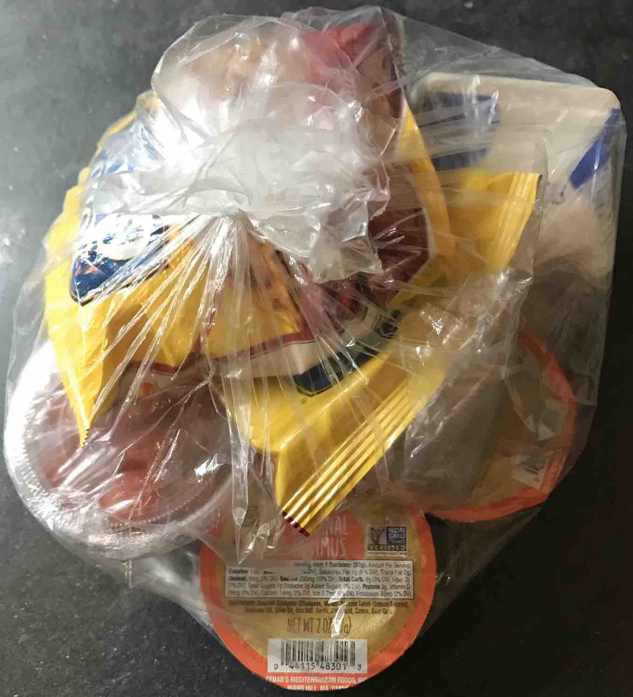
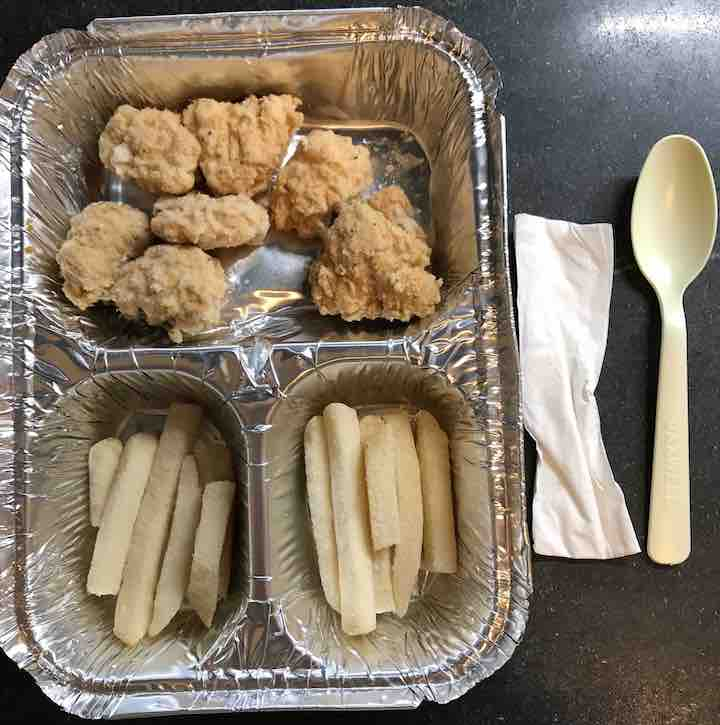
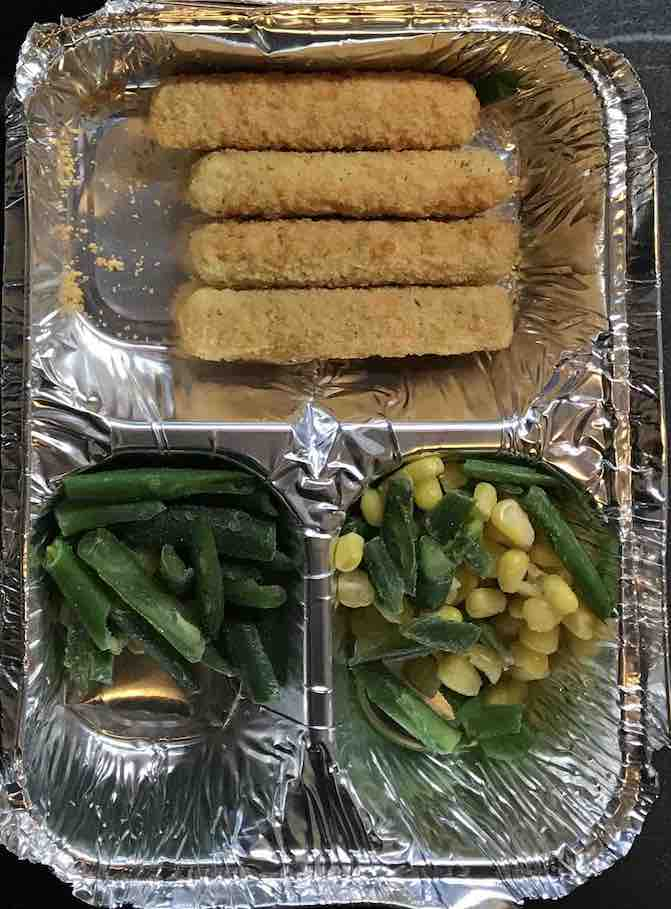
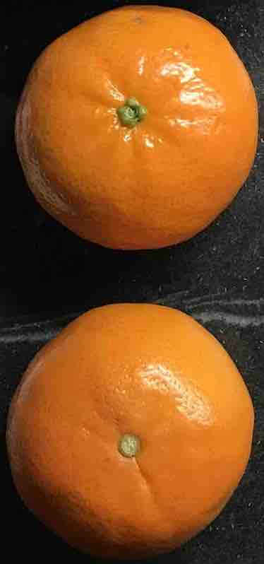
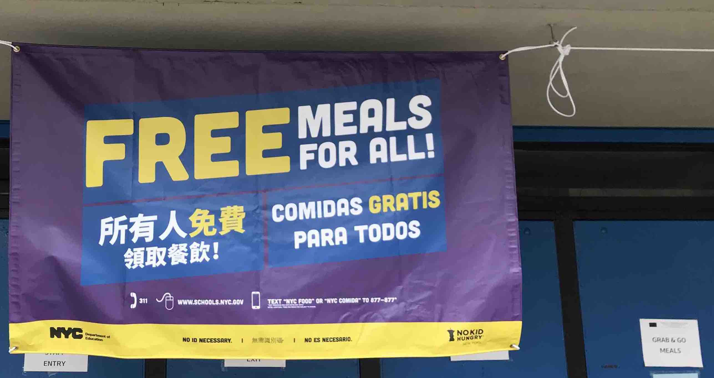
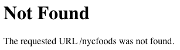

New York City offers free meals to everybody. How’s the food?
Origin
Nonprofits in New York City have been giving away food since the late 1700s. To whom? The poor.
But that has changed. In 2020 the City itself began offering free meals to every human being in New York—universal single-payer food. Mayor Bill de Blasio appointed a COVID-19 Food Czar, Kathryn Garcia, to create, operationalize and oversee a structure for working New Yorkers to get the food they need during this pandemic. Within days, under the auspices of this GetFoodNYC program, the city’s Department of Education was dispensing Grab & Go meals, gratis, at almost 500 locations to any and all comers. Show up, choose from the menu, and take as many meals as you want, no questions asked.
By June 2020, the mayor said it was providing about a half million meals per weekday, while a companion program was delivering about a million meals per day. According to the food czar, about 30 food providers, restaurants, caterers, farms, [and] consorti[a] were participating.
Grab & Go deserves to be understood as a major take-out restaurant chain, run by the government, with $0 as the price of every meal. Its restaurants merit the same scrutiny as any other, starting with the food itself.
Food
So, how’s the food?
Convenient?
Bundled meal
Most Grab & Go meals are bundled into whole-meal bags, so you can pick up a meal (or two) in one hand. No need for serial decisions on appetizer, main course, desert, and beverage. The meals are ready when you arrive, so there is no wait. Almost every meal includes a napkin and plastic teaspoon. In these ways, they are convenient.
But the bundling is also inconvenient:
You can choose among meals, but you have no choice about the components. Without exception, the beverage in every meal is milk: sometimes plain, sometimes chocolate; sometimes fresh, sometimes boxed ultra-high-temperature (UHT); sometimes low-fat, sometimes no-fat. If you have dietary restrictions or strong preferences, no single meal is likely to conform to them.
The meals are packages of packages of food, and sometimes even packages of packages of packages of food. Getting through the packaging to the food itself can require body-builder strength or sharp utensils.
A spoon is not optimal for some of the ingredients (such as french fries).
Varied?
Grab & Go offers a choice of meals, including vegetarian, Kosher, and Halal. But each of those categories usually describes exactly one meal, so there is little intra-category variety. And New Yorkers who adhere to vegan or organic diets are out of luck. Only some components of some meals are vegan, and nothing is ever organic.
Breakfasty main dishes rotate among dry cereal, bagels with cream cheese, mini-waffles, and occasionally banana bread. You can usually choose among lunch and supper main dishes such as beef, turkey and cheese, and peanut butter and jelly sandwiches, hamburgers, bean and cheese burritos, bagel pizza, and hummus with pretzels.
Accompanying the main dishes are packaged fruit dishes, usually bagged apple slices or cartons of apple-and-peach sauce or fruit juice, usually grape, apple and pear, orange, or orange and tangerine.
While this variety might at first seem adequate, the vegetables exhibit shocking monotony. Until June of 2021, the only vegetable in about 80% of the meals was Bolthouse Farms baby carrots. Then suddenly cherry tomatoes began to claim the title of one-and-only vegetable during some weeks. But Grab & Go never served anything leafy or cruciferous. No cabbage, bell pepper, spinach, avocado, radish, onion, cauliflower, squash, eggplant, or olives, to name a few omissions. The advice of the Dietary Guidelines for Americans, 2020–2025, to eat Vegetables of all types—dark green; red and orange; beans, peas, and lentils; starchy; and other vegetables does not seem to have guided the meal planners.
On one occasion I was offered chicken with broccoli. It turned out to be chicken with french fries. This is not uncommon. When you ask what the meals contain, you may get inaccurate answers.
But there are rare exceptions. Out of a dozen meals, you might find one with a deviant vegetable, such as chickpeas, corn, or white or red or green beans. Out of another dozen, a genuine whole apple or clementine may turn up.
French fries advertised as broccoli
Mozarella sticks with green beans and corn
Clementines
Fresh?
The interior packaging is often imprinted with best-by or sell-by dates. Those dates are always in the future. But the time until expiration varies greatly, from a day to months.
So the food is fresh, as in unexpired. But the produce has almost always undergone some post-harvest manufacturing.
Delicious?
The taste of almost everything in a Grab & Go meal is mild—others would say simple, plain, or bland. Some manufactured mélanges (such as the turkey, which is really a slice of turkey sausage) hardly taste at all. That is not entirely a complaint. There is no risk of over-adulteration. No need to worry about excessive pepper, ginger, or cilantro. Some meals include pouches of mustard and/or mayonnaise, but otherwise you provide your own spices. There is one major exception: the jalapeño-laced burritos.
Taste-wise, the meals avoid offense. Conversely, they avoid excitement. Adjectives like succulent and exquisite just don’t apply.
Nutritious?
The kitchen-packaged food seems wholesome, and the factory-labeled food is partly strong on whole-grain, low-sugar, low-salt virtues. But the breakfast cereals are sugary (sweetened or frosted) versions of their classic siblings.
Some of the packaged food is not labeled for individual sale, so discovering the ingredients requires research. The Cabo Primo burritos, for example, are identified only with a faint stock code 71674. While the manufacturer does not admit to using that code, the Missouri Department of Elementary and Secondary Education fully documents that product, reassuring you, for example, that it satisfies the Whole Grain-Rich Criteria of the National School Lunch Program.
Environmentally benign?
Grab & Go has contributed to the COVID-19 packaging-waste epidemic. Its strategy of embedded packaging wastes plastic in two ways:
Each meal is housed in a half-dozen packages, including even a plastic sleeve wrapping the spoon and napkin.
The food is packaged in portion sizes. So, if you are going to grab a week’s supply of meals, they will likely include about 7 plastic pouches of sliced apples, each 2 ounces, or roughly a third of an apple. Since most customers presumably arrive with their own bags, Grab & Go could instead hand over 2 or 3 whole apples, with zero packaging, while also avoiding the environmental damage arising from the manufacturing process. Mini-packages could also be replaced by multi-serving packages of milk, bagels, breakfast cereal, cheese, and so on.
The strategy of whole-meal bundling likewise produces waste:
Not everybody is willing and able to eat everything. If you exhibit lactose malabsorption, a condition that the Mayo Clinic says is most common in people of African, Asian, Hispanic and American Indian descent and that affects an estimated 36% of the United States population (add another 2% for vegans), you will need to shun all that milk, and you will not know whether the unlabeled cheese slices are safe for you.
Packaging every meal with a napkin may be innocuous, but a plastic spoon? A spoon lasts longer than one meal. The spoons are labeled compostable, but that is greenwashing.
The components vary greatly in shelf life. The regular milk is good for a few days, but the pretzels last for months. If any component reaches the end of its useful life, the whole meal is discarded.
Visit a location on a Friday afternoon shortly before closing time, and you may see dozens of meals not yet claimed. Ask what will happen to them, and the answer varies. I have been told (1) they will all be trashed, (2) some will be trashed but others can be distributed the next week, and (3) all will be trashed unless the Friday afternoon lady shows up to take away what is left.
Restaurants often combine a main dish with vegetables, but they usually give customers a separate choice of beverage and dessert. Grab & Go promotes food waste by combining all these into a bundle. Eat what you like, discard the rest.
Why?
In sum, the meals at Grab & Go are mediocre: in the middle range between excellent and atrocious. If you are happy to eat almost anything, they are good enough. If you insist on food that is delicious, or pesticide-free, or full of variety, or waste-free, they are inadequate.
Why the mediocrity? One hypothesis: Grab & Go was designed for demand management. Here is that story: There was an explosion of food insecurity in 2020. Officials wanted to create a distribution system that starving people could use and people at risk of deportation would use. So the system was designed to dispense meals at no cost and with no requirement to identify oneself. But the city could not feed three meals a day to eight million New Yorkers, so it needed to limit the demand. How? Make the meals mediocre.
The idea that the food is mediocre by design gets some support from the food czar herself. It’s very important that you are getting something that you will eat, she said. So, the stated aspiration was edibility, rather than adorability. And edibility could be calibrated so that the desired number of meals would be demanded. Only the sufficiently desperate would claim meals. Tellingly, the food czar did not claim to practice dogfooding: She did not say My staff and I enjoy the Grab & Go meals ourselves; we think you’ll savor them as much as we do. Food czar Garcia resigned on 7 September 2020 (to run for mayor) and was not replaced. She declined to comment on a draft of this article.
But there is more to the story. To ensure moderate demand, Grab & Go was also made difficult to discover and access. Publicize the program only enough, and make obtaining the meals sufficiently cumbersome, to keep away all but a manageable number of customers.
Grab & Go was made hard to patronize in several ways:
Restaurants are typically open at least 6 hours a day, especially on weekends. But Grab & Go until the end of June 2021 was open only 10 hours per week, namely 3 to 5 p.m. on weekdays. And its sites sometimes closed or switched to an earlier schedule with minimal prior notice. Starting on 28 June 2021, the open times were doubled to 20 hours per week: 9 a.m. to 1 p.m. weekdays.Banner at a site
Signage at Grab & Go locations is confusing. It was nearly non-existent until April 2021, and even after that it failed to disclose the operating hours. Banners contained mistranslated eligibility information (NO ES NECESARIO) and gave wild-goose-chase SMS instructions (Thanks for texting! Reply with your full address to get connected to free meals for kids.; We don’t have site data for your area at this time; etc.)
Grab & Go information on the Web is fiendishly obscure. A search for food on the official website of the City of New York hits NYC Food, but clicking that link gets you a Not Found error, because the URL is misspelled http://www.nyc.gov/nycfoods, instead of http://www.nyc.gov/nycfood.Not Found page This link has remained bad for months after NYC Food Policy was notified. Even if you somehow reached NYC Food Policy’s site, you would need to successively click Programs, Food Assistance & Access, Emergency Food, and FoodHelp.nyc Food Map. That would produce an interactive map of food sources, including Grab & Go. But there are several paragraphs of instructions for the map (such as Set the buffer distance), and the map is flaky. Using it twice in a row may show you a Grab & Go location once but not the second time. Moreover, the details say Grab & Go meals at NYC schools, leaving it unclear whether they are only for students. Grab & Go is run by the Department of Education, but that department’s website buries information about Grab & Go inside the School Life section; who would guess? There you were told, until summer 2021, to consult the DOE calendar for details, but the calendar didn’t even mention Grab & Go. Starting in June 2021 the page has been more informative, but still tells you to Check your local DOE food distribution center for more information, without letting you know what a DOE food distribution center is or how to contact one.
NYC Food Policy, when asked why Grab & Go was being kept such a secret, said (by email) We make all efforts to raise awareness about our feeding sites. That perfunctory and clearly incorrect answer is consistent with an intent to manage rather than expand demand.
The weak demand for Grab & Go meals was noted by the City of New York Independent Budget Office in a July 2020 study. Its report found Grab & Go locations well placed for low-income neighborhood penetration and proximity to students, but noted that patronage was too low to satisfy more than a fraction of the need. Did that revelation trigger efforts to boost demand? Apparently not. That complacency seems to point to demand moderation as a feature, not a bug.
Finally, customer-obsessed services ask patrons to comment. Was everything satisfactory? What could we do better? Would you recommend us to your friends? Grab & Go does not. Implicit message: We don’t care what you think.
But …
This evidence for the demand-management hypothesis may seem irrefutable, but it collides with a February 2021 report on the economics of Grab & Go by David Rubel. According to Rubel, it would be irrational for Grab & Go to suppress the demand for its meals. Instead, demand should be promoted aggressively, because satisfying more demand would cost the city nothing. Rubel says the program gets federal reimbursements and could triple its size before reaching the reimbursement limit. Rubel blames Grab & Go’s food mediocrity and meager marketing for the weak demand. In fact, he says that until early 2021 the food assortment was even more boring than described above, because the main dishes were limited to cold sandwiches. Further, Rubel says that federal regulations would permit Grab & Go to provide food in multi-day batches instead of single-meal bundles. The design flaws, he asserts, have resulted in massive rejection of the service even by undernourished persons, leaving about 80% of the potential beneficiaries unserved and about half a billion dollars annually of federal funds on the table, unspent. Rubel says that other cities have avoided these defects and earned much larger market shares and federal reimbursements.
Is, in fact, Grab & Go irrationally wasting an opportunity to feed New York City at federal expense? The answer is not easy to find. There are multiple federal programs subsidizing state and local food provision. Their regulations have become more complex. For example, the United States Department of Agriculture’s Food and Nutrition Service has issued about 140 COVID-19 waivers & flexibilities for New York State or City. Grab & Go does not disclose how it covers its costs. You might reasonably ask, when you grab a free meal, who is paying for it, but Grab & Go does not tell you. As Rubel points out, it is potentially a $60-million-per-month program, and yet it does not issue periodic reports on its finances or performance. The New York City Comptroller has issued four reports on the Department of Education since 1 March 2020, but none on the Department’s food programs, including Grab & Go.
Bottom line
Grab & Go is, arguably, an ambitious experiment in a universal human right to food, but it is designed as if to prevent too many people from exercising that right. Culinary mediocrity, bungled publicity, and limited opening times combine to suppress demand. According to one analyst, this limited scale is harming potential beneficiaries and sacrificing New York City’s entitled share of federal food subsidies.
Suppose Rubel is right, and Grab & Go could triple its volume at federal expense. How? Rubel says: Advertise pervasively and keep providing a mix of reheatable and cold dishes. Those recommendations are reasonable, but I doubt they would suffice. Reheatability does not amount to quality. Hot food is not necessarily good, let alone superb. And, in addition to the scale of marketing, the content of marketing matters. If those who learn of it classify Grab & Go as the next step up from dumpster diving, they are not to blame. New York City is teeming with experts who could reshape the image of Grab & Go to fashionable, cool, retro, woke, civic duty, or whatever would jump-start demand, create buzz, and establish higher expectations. The Department of Education could solicit customer comments and suggestions. Menu experiments and customer-oriented adjustments to the meals and the service could ensue.
The makeover will be complete when you stop feeling guilty for taking a meal from Grab & Go, start feeling negligent for not eating its meals, respond thoughtfully to its customer-satisfaction surveys, and get invited to a focus group to help make it even better.